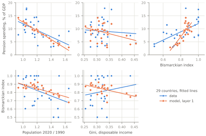
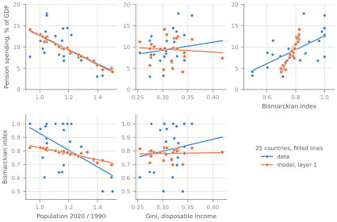

C6. The cross-country test
Section 7 of the paper ends with a test of the model across the OECD countries of figure 1.1. The U.S., measured as the other countries are, from the OECD earnings deciles at the U.S. income percentiles, anchors the test: its political weight of the old ω and its cost parameter λ. Layer 1 gives every other country the U.S. ω and λ with its own workers per retiree, income distribution and observed design, and predicts its tax rate and its design. Layer 2 calibrates each country’s ω to its pension spending and predicts its design. The model’s design is the one in force in 2020, chosen in 1990, as for the U.S. target of λ. The paper leaves out the countries whose informal employment is high and gives every country the U.S. propensities to vote by income group. This page repeats the test with all the countries of the figure, and with each country’s own propensities to vote.
All the countries
Korea, Mexico and Turkey join the sample. The data’s slope of spending on the Gini then turns negative, the model’s sign, and the data’s slope of the index on population growth flattens toward layer 1’s. The other signs are those on the paper’s sample: spending falls with population growth and rises with the index in the data and in the model, the model’s spending rising more steeply with the index; the index falls with population growth in the data and in both layers; and the index rises with the Gini in the data, not significantly, where it falls in both layers. The table after the slopes gives the political weight of the old each country’s spending implies.
\(\cdot\)

Source
Reads:
data/oecd26_sample.csvdata/oecdFigure1.csvresults/calibration/US_rhoGridCommonX.csvresults/oecd26/anchor.csvresults/oecd26/layer1.csv
Built by figuresOECD26.oecd26Figure (python/paper) at commit d5f0ef6. Rebuild: .venv\Scripts\python.exe python\paper\build.py --only OECD26_Layer1_29, then build.py --site.
\(\cdot\)
| Relation | Data | Layer 1 | Layer 2 |
|---|---|---|---|
| Pension spending on population growth | −12.49 \((3.36)\) | −16.38 \((0.51)\) | targeted |
| Pension spending on the Gini | −6.97 \((16.76)\) | −24.16 \((12.14)\) | targeted |
| Pension spending on the Bismarckian index | 15.87 \((3.76)\) | 39.58 \((5.18)\) | 46.93 \((5.99)\) |
| Bismarckian index on population growth | −0.33 \((0.15)\) | −0.30 \((0.03)\) | −0.20 \((0.06)\) |
| Bismarckian index on the Gini | 0.63 \((0.66)\) | −0.84 \((0.22)\) | −0.44 \((0.29)\) |
Note: Least-squares slopes with standard errors in parentheses, 29 countries. The regressors are those of figure D1.1 in data and model alike; the model’s index is \(1/(2-\theta)\) of the design in force in 2020 on the freely simulated path, chosen in 1990 (for the U.S. its observed design, the target of \(\lambda\)), and its spending is \(\tau(1-\alpha)\) at the observed design. Layer 1: every country at the U.S. \(\beta = 0.655\), \(\omega = 1.294\) and \(\lambda = 11.109\); layer 2: \(\omega\) calibrated to each country’s spending, which it then matches.
Source
Reads:
data/oecd26_sample.csvdata/oecdFigure1.csvresults/calibration/US_rhoGridCommonX.csvresults/oecd26/anchor.csvresults/oecd26/layer1.csvresults/oecd26/layer2.csv
Built by tablesOECD26.oecd26Slopes (python/paper) at commit d5f0ef6. Rebuild: .venv\Scripts\python.exe python\paper\build.py --only OECD26_Slopes_29, then build.py --site.
\(\cdot\)
| Data | Model, layer 2 | |||||||
|---|---|---|---|---|---|---|---|---|
| Country | \(\nu_{2020}\) | \(\tilde V\) | spending | \(I\) | \(\theta\) | \(\omega\) | \(\theta\) | \(I\) |
| Australia | 1.50 | 0.202 | 4.2 | 0.499 | 0.000 | 1.329 | 0.689 | 0.763 |
| Austria | 1.16 | 0.161 | 14.3 | 1.000 | 1.000 | 1.610 | 0.906 | 0.914 |
| Belgium | 1.16 | 0.104 | 11.5 | 0.643 | 0.445 | 1.458 | 0.930 | 0.935 |
| Canada | 1.37 | 0.171 | 6.4 | 0.729 | 0.629 | 1.291 | 0.756 | 0.804 |
| Czech Republic | 1.02 | 0.170 | 8.6 | 0.603 | 0.343 | 1.140 | 0.841 | 0.863 |
| Denmark | 1.13 | 0.116 | 8.2 | 0.639 | 0.436 | 1.202 | 0.865 | 0.881 |
| Finland | 1.11 | 0.094 | 12.6 | 1.000 | 1.000 | 1.411 | 0.937 | 0.940 |
| France | 1.16 | 0.150 | 14.4 | 1.000 | 1.000 | 1.610 | 0.903 | 0.912 |
| Germany | 1.05 | 0.148 | 11.2 | 0.892 | 0.880 | 1.247 | 0.873 | 0.887 |
| Greece | 1.04 | 0.225 | 17.9 | 0.857 | 0.833 | 1.708 | 0.898 | 0.908 |
| Hungary | 0.94 | 0.265 | 7.7 | 1.000 | 1.000 | 0.947 | 0.767 | 0.811 |
| Iceland | 1.44 | 0.112 | 3.0 | 0.711 | 0.593 | 1.145 | 0.618 | 0.723 |
| Ireland | 1.42 | 0.240 | 3.3 | 0.500 | 0.000 | 1.153 | 0.570 | 0.700 |
| Italy | 1.05 | 0.134 | 17.4 | 1.000 | 1.000 | 1.688 | 0.934 | 0.938 |
| Japan | 1.02 | 0.124 | 9.6 | 0.750 | 0.667 | 1.136 | 0.857 | 0.875 |
| Korea\(^{\dagger}\) | 1.18 | 0.229 | 3.5 | 0.724 | 0.619 | 0.938 | 0.520 | 0.676 |
| Luxembourg | 1.65 | 0.187 | 9.0 | 0.847 | 0.820 | 1.761 | 0.836 | 0.859 |
| Mexico\(^{\dagger}\) | 1.53 | 0.163 | 4.6 | 0.756 | 0.678 | 1.310 | 0.661 | 0.747 |
| Netherlands | 1.17 | 0.116 | 6.8 | 0.953 | 0.951 | 1.129 | 0.815 | 0.844 |
| New Zealand | 1.49 | 0.141 | 5.1 | 0.604 | 0.344 | 1.345 | 0.750 | 0.800 |
| Norway | 1.27 | 0.101 | 7.6 | 0.759 | 0.683 | 1.274 | 0.868 | 0.883 |
| Poland | 1.00 | 0.240 | 11.4 | 0.962 | 0.961 | 1.203 | 0.832 | 0.856 |
| Portugal | 1.04 | 0.249 | 13.6 | 0.982 | 0.981 | 1.386 | 0.860 | 0.877 |
| Spain | 1.22 | 0.183 | 12.8 | 1.000 | 1.000 | 1.571 | 0.874 | 0.888 |
| Sweden | 1.21 | 0.081 | 8.5 | 0.868 | 0.848 | 1.266 | 0.916 | 0.923 |
| Switzerland | 1.29 | 0.127 | 6.9 | 0.831 | 0.796 | 1.240 | 0.811 | 0.841 |
| Turkey\(^{\dagger}\) | 1.54 | 0.224 | 7.4 | 1.000 | 1.000 | 1.527 | 0.760 | 0.807 |
| United Kingdom | 1.17 | 0.185 | 7.8 | 0.694 | 0.559 | 1.198 | 0.805 | 0.837 |
| United States\(^{\ast}\) | 1.34 | 0.333 | 7.4 | 0.790 | 0.735 | 1.294 | 0.735 | 0.790 |
Note: \(\nu_{2020}\), workers per retiree; \(\tilde V\), the dispersion of relative incomes at the U.S. income percentiles; spending in % of GDP; \(I\), the Bismarckian index, and \(\theta = 2 - 1/I\) clipped to [0,1]. \(\omega\) is calibrated to spending at \(\beta = 0.655\) and the U.S. \(\lambda = 11.109\); the last two columns are the model’s design, in force in 2020 on the freely simulated path, chosen in 1990, and its index. \(^{\ast}\)The U.S. is the anchor, where \(\lambda\) is calibrated. \(^{\dagger}\)Outside the paper’s sample: informal employment above 25% of employment.
Source
Reads:
data/oecd26_sample.csvdata/oecdFigure1.csvresults/calibration/US_rhoGridCommonX.csvresults/oecd26/anchor.csvresults/oecd26/layer2.csv
Built by tablesOECD26.oecd26Omega (python/paper) at commit d5f0ef6. Rebuild: .venv\Scripts\python.exe python\paper\build.py --only OECD26_Omega_29, then build.py --site.
Each country’s own turnout
Each country’s propensities to vote by income group now come from the CSES. The U.S. anchor is recalibrated at its own CSES turnout, which raises λ, and Luxembourg, with no CSES election, leaves data and model alike. The relations the test reproduces at the U.S. turnout keep their signs: spending falls with population growth, about as steeply in layer 1 as in the data on these countries, and rises with the index in both layers, and the index falls with population growth in both layers. On the Gini, where the data show no significant relation, layer 1’s slope of the index nearly vanishes and layer 2’s takes the data’s sign, neither significantly, while layer 1’s slope of spending keeps the sign opposite to the data’s.
\(\cdot\)

Source
Reads:
data/oecd26_sample.csvdata/oecdFigure1.csvresults/calibration/US_rhoGridCommonX.csvresults/oecd26/anchor.csvresults/oecd26/layer1.csv
Built by figuresOECD26.oecd26Figure (python/paper) at commit d5f0ef6. Rebuild: .venv\Scripts\python.exe python\paper\build.py --only OECD26_Layer1_cses, then build.py --site.
\(\cdot\)
| Relation | Data | Layer 1 | Layer 2 |
|---|---|---|---|
| Pension spending on population growth | −16.74 \((4.00)\) | −16.49 \((0.53)\) | targeted |
| Pension spending on the Gini | 18.67 \((24.67)\) | −5.86 \((16.33)\) | targeted |
| Pension spending on the Bismarckian index | 16.39 \((3.75)\) | 51.41 \((4.00)\) | 48.55 \((4.55)\) |
| Bismarckian index on population growth | −0.62 \((0.18)\) | −0.29 \((0.02)\) | −0.35 \((0.07)\) |
| Bismarckian index on the Gini | 0.87 \((1.01)\) | −0.02 \((0.30)\) | 0.42 \((0.46)\) |
Note: Least-squares slopes with standard errors in parentheses, 25 countries (without LUX, which has no turnout data). The regressors are those of figure D1.1 in data and model alike; the model’s index is \(1/(2-\theta)\) of the design in force in 2020 on the freely simulated path, chosen in 1990 (for the U.S. its observed design, the target of \(\lambda\)), and its spending is \(\tau(1-\alpha)\) at the observed design. Layer 1: every country at the U.S. \(\beta = 0.655\), \(\omega = 1.287\) and \(\lambda = 13.443\); layer 2: \(\omega\) calibrated to each country’s spending, which it then matches. Turnout: each country’s own.
Source
Reads:
data/oecd26_sample.csvdata/oecdFigure1.csvresults/calibration/US_rhoGridCommonX.csvresults/oecd26/anchor.csvresults/oecd26/layer1.csvresults/oecd26/layer2.csv
Built by tablesOECD26.oecd26Slopes (python/paper) at commit d5f0ef6. Rebuild: .venv\Scripts\python.exe python\paper\build.py --only OECD26_Slopes_cses, then build.py --site.
\(\cdot\)
| Data | Model, layer 2 | |||||||
|---|---|---|---|---|---|---|---|---|
| Country | \(\nu_{2020}\) | \(\tilde V\) | spending | \(I\) | \(\theta\) | \(\omega\) | \(\theta\) | \(I\) |
| Australia | 1.50 | 0.202 | 4.2 | 0.499 | 0.000 | 1.260 | 0.507 | 0.670 |
| Austria | 1.16 | 0.161 | 14.3 | 1.000 | 1.000 | 1.610 | 0.829 | 0.854 |
| Belgium | 1.16 | 0.104 | 11.5 | 0.643 | 0.445 | 1.432 | 0.817 | 0.845 |
| Canada | 1.37 | 0.171 | 6.4 | 0.729 | 0.629 | 1.259 | 0.611 | 0.720 |
| Czech Republic | 1.02 | 0.170 | 8.6 | 0.603 | 0.343 | 1.116 | 0.754 | 0.802 |
| Denmark | 1.13 | 0.116 | 8.2 | 0.639 | 0.436 | 1.171 | 0.708 | 0.774 |
| Finland | 1.11 | 0.094 | 12.6 | 1.000 | 1.000 | 1.411 | 0.815 | 0.844 |
| France | 1.16 | 0.150 | 14.4 | 1.000 | 1.000 | 1.610 | 0.828 | 0.853 |
| Germany | 1.05 | 0.148 | 11.2 | 0.892 | 0.880 | 1.237 | 0.779 | 0.819 |
| Greece | 1.04 | 0.225 | 17.9 | 0.857 | 0.833 | 1.688 | 0.847 | 0.868 |
| Hungary | 0.94 | 0.265 | 7.7 | 1.000 | 1.000 | 0.947 | 0.718 | 0.780 |
| Iceland | 1.44 | 0.112 | 3.0 | 0.711 | 0.593 | 1.117 | 0.276 | 0.580 |
| Ireland | 1.42 | 0.240 | 3.3 | 0.500 | 0.000 | 1.095 | 0.401 | 0.625 |
| Italy | 1.05 | 0.134 | 17.4 | 1.000 | 1.000 | 1.688 | 0.876 | 0.890 |
| Japan | 1.02 | 0.124 | 9.6 | 0.750 | 0.667 | 1.119 | 0.749 | 0.799 |
| Netherlands | 1.17 | 0.116 | 6.8 | 0.953 | 0.951 | 1.125 | 0.655 | 0.744 |
| New Zealand | 1.49 | 0.141 | 5.1 | 0.604 | 0.344 | 1.300 | 0.559 | 0.694 |
| Norway | 1.27 | 0.101 | 7.6 | 0.759 | 0.683 | 1.252 | 0.682 | 0.758 |
| Poland | 1.00 | 0.240 | 11.4 | 0.962 | 0.961 | 1.200 | 0.789 | 0.826 |
| Portugal | 1.04 | 0.249 | 13.6 | 0.982 | 0.981 | 1.384 | 0.819 | 0.847 |
| Spain | 1.22 | 0.183 | 12.8 | 1.000 | 1.000 | 1.571 | 0.813 | 0.842 |
| Sweden | 1.21 | 0.081 | 8.5 | 0.868 | 0.848 | 1.255 | 0.715 | 0.778 |
| Switzerland | 1.29 | 0.127 | 6.9 | 0.831 | 0.796 | 1.228 | 0.695 | 0.766 |
| United Kingdom | 1.17 | 0.185 | 7.8 | 0.694 | 0.559 | 1.176 | 0.723 | 0.783 |
| United States\(^{\ast}\) | 1.34 | 0.333 | 7.4 | 0.790 | 0.735 | 1.287 | 0.735 | 0.790 |
Note: \(\nu_{2020}\), workers per retiree; \(\tilde V\), the dispersion of relative incomes at the U.S. income percentiles; spending in % of GDP; \(I\), the Bismarckian index, and \(\theta = 2 - 1/I\) clipped to [0,1]. \(\omega\) is calibrated to spending at \(\beta = 0.655\) and the U.S. \(\lambda = 13.443\); the last two columns are the model’s design, in force in 2020 on the freely simulated path, chosen in 1990, and its index. \(^{\ast}\)The U.S. is the anchor, where \(\lambda\) is calibrated. Turnout: each country’s own.
Source
Reads:
data/oecd26_sample.csvdata/oecdFigure1.csvresults/calibration/US_rhoGridCommonX.csvresults/oecd26/anchor.csvresults/oecd26/layer2.csv
Built by tablesOECD26.oecd26Omega (python/paper) at commit d5f0ef6. Rebuild: .venv\Scripts\python.exe python\paper\build.py --only OECD26_Omega_cses, then build.py --site.